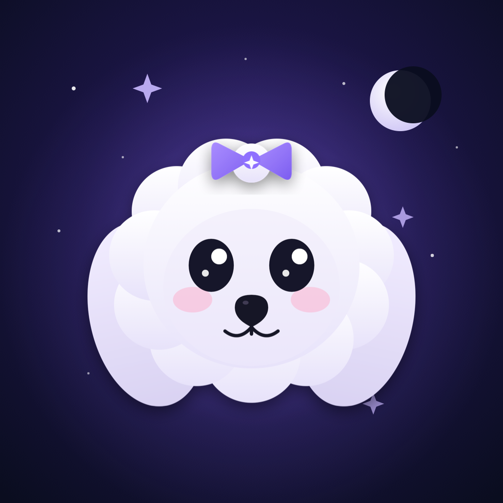

Gökyüzünü camdan okumak. AstroApp için 2026 tasarım dili.
Bu doküman, uygulamanın bugünkü gerçek yapısı üzerine kurulu: 4 sekme (Anasayfa, Astroloji, Kart Falı, Ayarlar),
AstroTheme renkleri, GlassCard, Canvas tabanlı ChartWheelView, Kozmik Koç, Synastry skoru ve kart yelpazesi.
Her ekranın altında bire bir SwiftUI karşılığı yazıyor; önerilen her şey iOS 17+ ve iOS 26 Liquid Glass API'leriyle yapılabilir, özel kütüphane gerektirmez.
01 · YÜZEY
Katmanlı camArka planda aurora ışıması, üstte yarı saydam kartlar, 1px üst parlama (specular). glassEffect() + GlassEffectContainer.
02 · TİPOGRAFİ
Serif başlık, sans gövdeBüyük başlıklar ve gezegen glifleri New York (.fontDesign(.serif)); okuma metni SF Pro. Mistik ama okunur.
03 · RENK
Lavanta + gök mavisiMevcut AstroTheme.accent korunur. Element ve ton renkleri tek bir anlam sistemine bağlanır; ekran başına keyfi renk yok.
04 · HAREKET
Az ama anlamlıKart çevirme, sayı geçişi, sembol nabzı. .contentTransition(.numericText()), .symbolEffect, .sensoryFeedback.
01
Tasarım dili — eskisinden ne farklı?
Eski çalışma (Spatial Radial) tamamen çark odaklıydı; neredeyse monokrom, çok küçük metinler, düz siyah yüzeyler. Yeni dil
uygulamanın tamamını kapsıyor ve üç kararla ayrışıyor: (1) yüzeyler düz değil, katmanlı cam; (2) her içerik tipinin kendi
rengi var (tonlar, elementler, gezegenler) ve bunlar ekranlar arasında değişmiyor; (3) tipografi iki sesli — serif ile "kehanet" tonu,
sans ile "bilgi" tonu. Aşağıdaki iki kart farkı yan yana gösterir.
ESKİ · SPATIAL RADIAL (2025)
Devrim · Doğum haritası · İkizler
Güneş♊ 2°14'8. ev
Ay♋ 18°33'11. ev
HaritaYorumGeçişlerFal
Düz siyah yüzey · 7–9px metin · tek vurgu rengi · hiyerarşi yalnızca opaklıkla kuruluyor.
YENİ · LIQUID GLASS (2026)
✦Kozmik KoçunSana özel
☉
Güneş
♊ İkizler 2°14′
8. ev
☽
Ay
♋ Yengeç 18°33′
11. ev
Tonlu cam · 10–13px okunur metin · gezegen renkleri · serif glif · üst parlama ile derinlik.
02
Renk & tipografi token'ları
İlk 10 renk zaten AstroTheme'de var; hex'ler birebir. Gezegen paleti yeni öneri: şu an ChartWheelView.planetColor() sistem renklerini
(.orange, .brown, .gray…) kullanıyor; bunlar koyu zeminde kirli duruyor. Önerilen palet aynı sırayla AstroTheme.planet(_:) olarak eklenir.
background
#0A0D1F
mevcut
background mid
#12102E
gradient orta
accent
#8F70FF
lavanta · mevcut
accentSecondary
#59C7FA
gök mavisi · mevcut
harmonik
#4DD9A6
üçgen / altıgen
zorlayıcı
#FF6673
kare / karşıt
nötr
#8C8CFF
kavuşum
fire
#FF736B
♈ ♌ ♐
earth
#6BD185
♉ ♍ ♑
air
#FFD959
♊ ♎ ♒
water
#66ADFF
♋ ♏ ♓
☉ sun
#FFB547
öneri
☽ moon
#E8ECFF
öneri
☿ mercury
#5AD8E6
öneri
♀ venus
#FF8AB8
öneri
♂ mars
#FF5F57
öneri
♃ jupiter
#B98CFF
öneri
♄ saturn
#C9A27E
öneri
♅ uranus
#5EEAD4
öneri
♆ neptune
#7B8CFF
öneri
♇ pluto
#9CA3AF
öneri
TİPOGRAFİ ÖLÇEĞİ → SWIFTUI
Günaydın, Devrim
.largeTitle · .fontDesign(.serif)
Ekran karşılaması, kart adı, paywall başlığı
Güneş · İkizler
.title2 · .fontDesign(.serif)
Detay sheet başlığı
Kozmik Koçun
.headline
Kart başlığı (mevcut kullanım korunur)
Kimlik ile duygular aynı noktada birleşir.
.subheadline
Yorum gövdesi — caption yerine; okunurluk için bir kademe büyütüldü
Katman 1: aurora + yıldız arka planı (SubtleStarsBackground korunur, üstüne 2 radial glow). Katman 2: içerik kartları. Katman 3: tonlu, etkileşimli cam — buton, tab bar, seçili chip.
03
Bileşen kütüphanesi
Mevcut Design/ klasöründe GlassCard, GlassButton, InfoTip, SectionHeaderWithInfo, PersonSelectionCard var. Aşağıdakiler onlara eklenecek ya da onları güncelleyecek parçalar. Her birinin altında önerilen Swift imzası yazıyor.
TonePill
TonePill(tone: .harmonik) · DailyCosmicCoach.Tone
△ Harmonik□ Zorlayıcı☌ NötrSana özel✦ Pro
Ton renkleri tek kaynaktan: AstroTheme.harmonik / zorlayici / notr. Bugün HomeView.toneColor.green/.orange döndürüyor — birleştirilmeli.
PlanetRow
PlanetRow(placement:) · glif + burç + ev
☉
Güneş
♊ İkizler 2°14′
8. ev
♀
Venüs
♉ Boğa 24°09′
9. ev
♂
Mars ℞
♓ Balık 11°47′
7. ev
AspectRow
AspectRow(aspect:) · orb rengi tona göre
☉☽
Güneş üçgen AyYaklaşan · 120°
2.1°
☉♂
Güneş kare MarsAyrılan · 90°
3.2°
♀♃
Venüs kavuşum JüpiterYaklaşan · 0°
0.8°
DotMeter
DotMeter(value: 4, of: 5, tint:) · Gauge yerine özel
Çark ChartWheelView'daki Canvas mantığıyla aynı: Ascendant solda (180°), burç halkası dışta, ev halkası içte, açı çizgileri merkezde.
Yenilik: burç dilimleri element rengiyle hafifçe boyanır, gezegenler kendi renginde glif + ince tick, açı çizgileri tona göre renkli ve majör/minör kalınlıkta.
Sonuç ekranı 4 segmente ayrılır; gezegen detayı tam ekran yerine yarım sheet olarak açılır.
09:41●●● ⌔ ▮
Astroloji
Devrim
⇪
12 Haziran 1990 · 14:35 · İstanbul · Placidus
Harita
Gezegenler
Açılar
Yorum
☉
Güneş
♊ İkizler 2°14′
8. ev
☽
Ay
♋ Yengeç 18°33′
11. ev
☿
Merkür
♊ İkizler 20°24′
9. ev
♀
Venüs
♉ Boğa 24°09′
9. ev
Doğum haritası · Harita
Element boyalı burç halkası · renkli açı ağı · segment geçişi
Kimlik ile duygular aynı noktada birleşir. Bu açı, bu iki konunun hayatta ayrı ayrı değil birlikte çalıştığını gösterir. Günlük hayatta kişi bir yandan kendini ortaya koymak ister…
🌟 OLUMLU ETKİLER
• Kendini net ortaya koyabilme • Duyguları fark edebilme • Güçlü ve net etki bırakabilme
Gezegen detayı · sheet
Çarka dokun → yarım sheet; yorum planet_house_sign.json'dan
Hava ağırlıklı, değişken bir harita. Zihin hızlı, iletişim güçlü; duygusal güvenlik Yengeç Ay'ı üzerinden aranır. Başak yükselen bu enerjiye düzen ve titizlik katar.
◔Element Dengesi
Hava
%42
Su
%27
Toprak
%19
Ateş
%12
✓Destekleyen Kalıplar
△
Büyük Üçgen (Hava)
Merkür – Ay – Uranüs: fikirler kolay akar.
!Gerilim Noktaları
□
T-Kare · Mars odaklı
Sabırsızlık; enerjiyi spora ya da projeye yönlendir.
Yorum · sentez
ChartSynthesisSection + element dengesi; ton gruplarının rengi ikonla tekrar eder
ChartSynthesisSection(synthesis:) · Element bar → DotMeter · ToneGroup ikon rengi = AstroTheme ton rengi
06
Transitler, Synastry ve Composite
Çift çark (bi-wheel) iki yerde kullanılır: transit (iç natal, dış bugün) ve synastry (iç A, dış B). Aynı Canvas bileşeni, farklı veri.
Dış halka gezegenleri daha küçük ve yarı saydam; iç–dış açı çizgileri yalnızca seçili gezegen için tam parlaklıkta çizilir, diğerleri soluk. Synastry'de skor halkası ilk ekranda tek "cevap" olarak durur.
09:41●●● ⌔ ▮
Astroloji
Transitler
⇪
PZT12
SAL13
ÇAR14
PER15
CUM16
CMT17
PAZ18
İç: natalDış: 16 Ekim 2026
ÖNEMLİ TRANSİTLER
♃☉
T. Jüpiter üçgen N. GüneşYaklaşan · 1.3° · 3 hafta sürer
△
♄☽
T. Satürn kare N. Ay ℞Ayrılan · 2.8° · duygusal disiplin
□
♀♀
T. Venüs karşıt N. VenüsYaklaşan · 0.9° · ilişkilerde ayna
☍
Transitler · bi-wheel
Üstte hafta şeridi (tarih kaydır); dış halka günün gökyüzü
TransitBiWheelView · ScrollView(.horizontal).scrollTargetBehavior(.viewAligned) · DatePicker yerine haftalık strip
09:41●●● ⌔ ▮
Astroloji
Synastry
⇪
♊
Devrim
♡
♌
Ayşe
Güçlü çekim, büyüyen bağ
Discepolo metodu · 23 cross-aspect
AŞK
84
İLETİŞİM
71
UZUN VADE
76
◬Önemli Cross-Aspectler
♀♂
Venüs (D) üçgen Mars (A)Çekim ve tutku doğal akar
1.1°
☽♄
Ay (D) kare Satürn (A)Duygusal mesafe; güven zamanla
2.4°
Synastry · sonuç
Skor halkası tek cevap; alt skorlar üçlü; çark ikinci segmentte
ScoreRing · PersonSelectionCard (mevcut) · .navigationTransition(.zoom(sourceID:in:)) kart → detay
09:41●●● ⌔ ▮
Astroloji
Composite
⇪
Devrim + Ayşe · orta nokta haritası
✦İlişkinin Kimliği
Composite Güneş 7. evde Yengeç: bu ilişki "biz" duygusunu yuva kurma ve birbirini kollama üzerinden tanımlar. Composite Ay Akrep'te derin bağ, kıskançlığa dikkat.
☉
Güneş
♋ Yengeç 8°
7. ev
☽
Ay
♏ Akrep 25°
11. ev
♀
Venüs
♋ Yengeç 26°
7. ev
Composite harita
Tek çark + "ilişkinin kimliği" hero; composite_aspects.json yorumları
Takvim dört olay türünü tek renk sistemiyle gösterir: ay fazı (beyaz), retrograde (zorlayıcı kırmızı), tutulma (lavanta), VOC (soluk mavi). Gün noktaları bu renklerde.
Ay fazı ekranında Ay gerçekten çizilir (Canvas ile aydınlanma maskesi), ikon değil. Günlük burç puanları DotMeter ile.
09:41●●● ⌔ ▮
Astroloji
Ekim 2026
☰
PZT12
SAL13
ÇAR14
PER15
CUM16
CMT17
PAZ18
19
20
21
22
23
24
25
16 EKİM · CUMA
🌔
Şişkin Ay · ♉ Boğa
%68 aydınlık · Dolunay'a 6 gün
◌
Ay Boşlukta (VOC)
14:20 – 19:05 · önemli karar erteleyin
4s 45d
℞
Satürn retro sürüyor
13 Tem – 28 Kas · sorumluluklar gözden geçirilir
✦Günün Tavsiyesi
Boğa Ay'ı ile sabah saatleri planlama ve bütçe için verimli. Öğleden sonra VOC'ta başlatma, bitir.
Astro Takvim
Hafta ızgarası + gün detayı tek ekranda; renk noktaları olay türü
AstroCalendarView · LazyVGrid(7) · gün seçimi .sensoryFeedback(.selection) · CalendarDayDetailView inline
09:41●●● ⌔ ▮
Astroloji
Ay Fazları
⇪
Şişkin Ay
%68 aydınlık · Ay şu anda ♉ Boğa burcunda
✦Ay Enerjisi
Büyüyen Ay'ın son evresi. Başladığın işleri tamamlamaya, ayrıntıları yerine oturtmaya uygun. Boğa'da beden, para ve konfor konuları öne çıkar.
Merkür Akrep'te derin sohbetler çağırıyor; yüzeysel sohbetler bugün seni tatmin etmez. Öğleden sonra Ay–Venüs uyumu estetik işler ve alışveriş için elverişli.
Aşk
4
Kariyer
3
Sağlık
5
Şans
3
ŞANSLI RENK
Turkuaz
ŞANSLI SAYI
7
Günlük Burç Yorumu
Burç şeridi (diğer burçlar reklam/Pro ile açılır) · DotMeter puanlar
DailyHoroscopeView · ScrollView(.horizontal) burç seçimi · AdGateView kilidi mevcut
08
Kart Falı — Tarot, Katina, Rün, Tanrı Kartları
Dört fal türü aynı akışı paylaşır: kategori → yelpazeden seç → dokun ve çevir → yorum → paylaş. Yelpaze gerçek kart gibi pivot etrafında döner; seçilen kart yükselir ve parlar.
Kart arkası tek tasarım (lavanta yıldız), kart önü türe göre renklenir: Tarot altın, Katina gül, Rün taş grisi, Tanrı Kartları indigo-elektrik.
09:41●●● ⌔ ▮
Kart Falı
1 ücretsiz hak
☉
TAROT · GÜNLÜK
Bugünün kartını çek
Geçmiş · Şimdi · Gelecek
Kart Çek
👁
Katina Falı
Kadim aşk kartları
ᚠ
Rün Falı
Viking rehberliği
⚡
Tanrı Kartları
Mitolojik mesaj
◷
Geçmiş Fallar
12 kayıt
?Nasıl Çalışır?
☝
Yelpazeden bir kart seç ve dokun
⟳
Kartını çevir ve yorumunu oku
🎁
Her gün 1 ücretsiz hak, ekstra için reklam izle
⌂
Anasayfa
✧
Astroloji
✦
Kart Falı
⚙
Ayarlar
Kart Falı sekmesi
Günlük tarot hero · 2×2 fal türü · kalan hak rozeti
CardReadingTabView · LazyVGrid(2) · hak sayacı EntitlementManager.freeReadingsLeft
09:41●●● ⌔ ▮
Kart Falı
Tarot
✕
✦
Kartını Seç
Zihnini odakla ve bir kart seç
Kaydırarak yelpazeyi döndür · dokunarak seç
Aşk
Kariyer
Genel
Kart seçimi · yelpaze
Pivot etrafında dönen kartlar; seçilen yükselir, cam parlaması
Güneş, açıklık ve neşe getirir. İlişkide saklanan bir şey kalmaz; sıcaklık ve dürüstlük bağı güçlendirir. Kendini olduğun gibi göster — görülmek bugün ödüllendirilir.
Sonucu Paylaş
Kart açıldı · yorum
Kart önü tür rengiyle; yorum tarot_cards.json; paylaşım kartı mevcut
.rotation3DEffect(.degrees(flip), axis: (0,1,0)) · 90° sonrası ön yüz · TarotShareCard + ShareImageRenderer
09
Paywall, Onboarding ve Ayarlar
Paywall üç kademe (₺200 / ₺300 / ₺400) tek sheet'te; önerilen kademe tonlu cam ile öne çıkar. Onboarding üç adım, her adım tek soru. Ayarlar düz liste; dil değişimi (TR/EN) ve "Haritayı yeniden hesapla" burada.
09:41●●● ⌔ ▮
✕
✦
Pro Özellikleri Aç
Yıldız haritanın tüm detaylarını keşfet
✓
Tüm gezegen & ev yorumları
✓
Synastry, Composite, Güneş Dönüşü
✓
Sınırsız kart falı, reklamsız
Doğum Haritası Pro
Tek seferlik
₺200
Astroloji Paketi Popüler
Harita + ilişki analizleri
₺300
Her Şey Dahil
Astroloji + tüm fallar
₺400
₺300 ile Devam Et
Satın Almaları Geri Yükle · Kullanım Koşulları
Paywall
Tek sheet · önerilen kademe tonlu · tek CTA
PaywallView · StoreManager.products (sıralı) · .presentationDetents([.large]) · ProductView yerine özel satır
09:41●●● ⌔ ▮
ADIM 2 / 3
Ne zaman doğdun?
Yükselen ve Ay burcun için doğum saatin gerekli.
12Haziran1990
14:35
Saati bilmiyorum →
Devam
Bu uygulama eğlence amaçlıdır. Profesyonel danışmanlık yerine geçmez.
Onboarding · adım 2
Her adım tek soru; serif soru başlığı; ilerleme çubuğu
TabView(.page) + özel indikatör · DatePicker(.wheel) tonlu cam içinde · "Saati bilmiyorum" → houses gizlenir
09:41●●● ⌔ ▮
Ayarlar
♊
Devrim
☉ İkizler · ☽ Yengeç · AC Başak
✦ Pro
PROFİL
◎
Doğum Bilgilerim
›
♡
Kayıtlı Kişiler
3
›
⟳
Haritayı Yeniden Hesapla
›
UYGULAMA
🌐
Dil
Türkçe
›
🔔
Transit Bildirimleri
🌙
Günlük Hatırlatıcı
09:00
›
SATIN ALMA
✦
Pro Özellikleri
›
↺
Satın Almaları Geri Yükle
›
⌂
Anasayfa
✧
Astroloji
✦
Kart Falı
⚙
Ayarlar
Ayarlar
Profil hero + gruplanmış cam listeler; ProfileView içeriği buraya taşındı
List yerine VStack + glassCard (List arka planı Liquid Glass'ta sorunlu) · Toggle(.tint(harmonik))
10
SwiftUI eşleme tablosu
Her görsel karar bir API'ye bağlı. iOS 26'ya özel olanlar işaretli; altında iOS 17 fallback'i yazıyor. Yeni bağımlılık yok.
ContentView — Tab API'si + tabBarMinimizeBehavior; tab başına reset mantığı aynen kalır.
G
MoonPhaseView — SF Symbol yerine Canvas Ay; SettingsView — ProfileView içeriği buraya.
12
Uygulama ikonu — maskotu koruyarak
Mevcut ikon seviliyor ve doğru: beyaz pofuduk maskot + lavanta fiyonk + hilal, koyu indigo zemin. Sorun ikonun kendisi değil,
kadrajı — maskot ikonun yaklaşık %55'ini kaplıyor, 60px'te yüz detayları (göz parlamaları, yanak, gülümseme) kayboluyor ve etrafta boş alan kalıyor.
Aşağıdaki seçenekler maskotu değiştirmez; kadrajı, ölçeği ve uygulamanın çark diliyle bağını dener. Her biri 160 / 60 / 29 px'te yan yana — ikon kararı 60px'te verilir.

60
29
AMevcut ikon
Maskot ortada, geniş boşluk, sağ üstte hilal, dağınık yıldızlar.
+ Karakter sevimli ve ayırt edici · fiyonk markaya özgü − 60px'te yüz okunmuyor · hilal ve yıldızlar gürültüye dönüşüyor · zemin düz mor, uygulamanın aurora zeminiyle farklı
60
29
BYakın kadraj Öneri
Aynı maskot, %55 → %90. Gövde alt kenardan taşar (iOS ikonlarında yaygın "portre" kadrajı), hilal sağ üstte tek aksesuar, aurora zemin.
+ 29px'te bile göz + fiyonk okunuyor · uygulama zeminiyle süreklilik · tek odak − Yıldızlar azaldı (ikon ölçeğinde zaten görünmüyorlardı)
60
29
CÇark halkası
Maskot, 12 element tonlu burç halkasının içinde — uygulamadaki natal çarkla doğrudan akrabalık.
+ "Astroloji" mesajı anında · ürünle görsel bağ − Halka maskotu küçültüyor, 29px'te renkli bir çember + beyaz leke oluyor · iki odak
60
29
DAy'da oturan
Hilal küçük bir aksesuar olmaktan çıkıp maskotun oturduğu hamağa dönüşür; klasik "ay üstünde karakter" kompozisyonu.
+ Hikâye var, sıcak · beyaz hilal koyu zeminde güçlü kontrast − Beyaz maskot + beyaz hilal birbirine karışabilir; hilalin kenarına ince gölge şart
60
29
EMarka işareti
Maskot yok; sadece fiyonk + yıldız. Uygulamanın en küçük ve en özgün parçası tek başına işaret olur.
+ Çok temiz, her boyutta okunur · iOS tinted/dark görünümlere kolay uyar − Sevilen karakter kayboluyor — ana ikon değil, bildirim/widget/Apple Watch için ikincil işaret olarak düşün
Light / Default
Dark
Tinted
FiOS 18+ görünümleri
Şu an üç görünüm de aynı PNG. Dark için zemin daha koyu + lavanta ışıma; Tinted için gri tonlu alfa maskesi (sistem kendi rengini verir).
+ Yakın kadraj üçünde de çalışıyor: beyaz maskot her zeminde kontrastlı − Mevcut ikonun küçük hilali ve yıldızları Tinted'da tamamen siliniyor
ANA EKRAN PROVASI · 60 PX
Takvim
AstroApp
Notlar
Müzik
Mevcut
C
D
Mail
Komşu ikonlar nötr placeholder. Karşılaştırma: ikinci sırada B (öneri), alt sırada mevcut, C ve D. Gerçek karar bu boyutta verilir.
İCON COMPOSER KATMANLARI (iOS 26 LIQUID GLASS)
1 · Zemin
+
2 · Hilal
+
3 · Maskot
+
4 · Fiyonk
iOS 26'da ikon tek PNG yerine .icon paketi olabilir (Xcode → Icon Composer). Katmanlar ayrı verilince sistem her birine
kendi cam parlamasını ve hafif paralaksı uygular; Dark ve Tinted görünümleri de aynı katmanlardan otomatik türer. Maskot ve fiyonk ayrı katman olursa
fiyonk cam gibi parlar, maskot mat kalır — fiziksel olarak da doğru.
Teslim: 1024×1024 PNG (köşe yuvarlatmasız, sistem kırpar) ya da Icon Composer katmanları SVG/PNG. Maskotun orijinal vektörü varsa B kadrajı için yalnızca ölçek + konum değişir, yeniden çizim gerekmez.
AstroApp · Liquid Glass Design 2026 · Bu dosya statik bir tasarım çalışmasıdır; gezegen konumları ve puanlar örnek veridir.
Çarklar sayfa yüklenince JavaScript ile çizilir (Ascendant solda, saat yönünün tersine ekliptik) — ChartWheelView.chartAngle() ile aynı dönüşüm.
Karşılaştırma için: astroapp_full_html.html (2025) ↔ astroapp_design_2026.html (bu dosya).